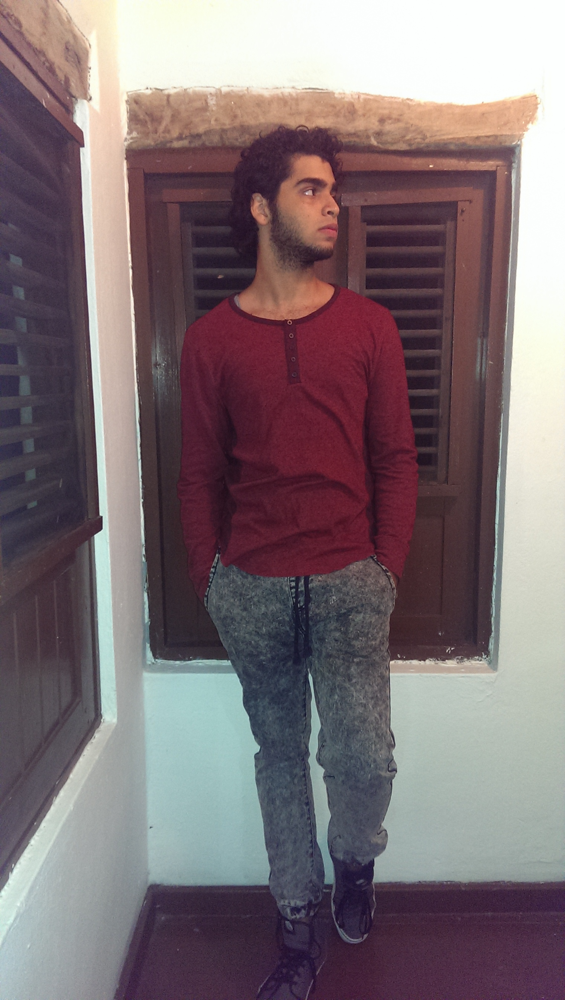

Nací en Santo Domingo el 18 de Agosto de 1996, en mi infancia estaba en el colegio Piolín Oriental y luego pasé a ITESA (Instituto Técnico Salesiano). Soy egresado del taller de Artes Gráficas como Diseñador Grafico. Descubrí la escuela Altos de Chavón por medio de otros estudiantes egresados de ITESA y eso me motivó a entrar aqui. Me gusta dibujar, oir música, tocar guitarra, jugar video juegos y dormir. Me la paso jugando League of Legends con mis amigos en mi tiempo libre, o me pongo a oir musica o tocar guitarra. Siempre se me ha sido fácil aprenderme los idiomas (o eso creo), se hablar inglés y estoy aprendiendo japonés, aprendi un poco de francés, pero se me olvidó ya que no me gustaba.
Aprendi algo de informática gracias a mi padre Eric Zapata que es tecnófilo y todo lo que sé de tecnologia se lo debo a él. Me encanta la ilustración digital, por eso quiero aprender a ilustrar en Photoshop y poder diseñar personajes para los video juegos futuros que saldrán.
